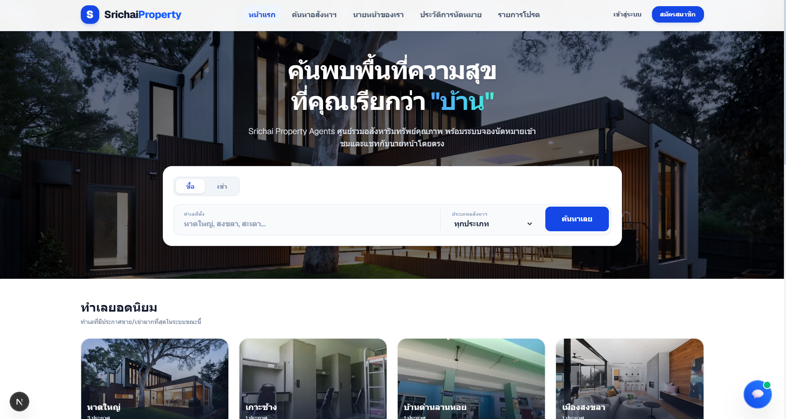
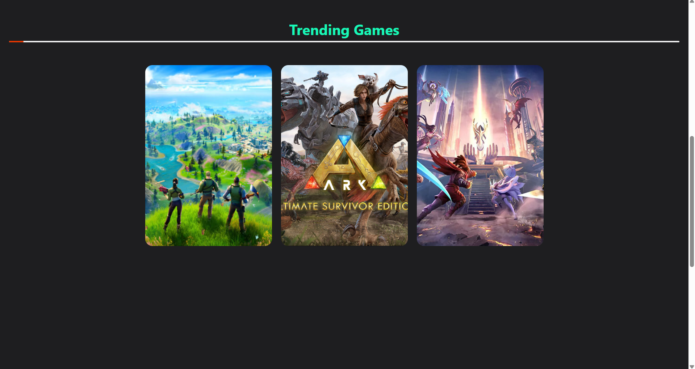
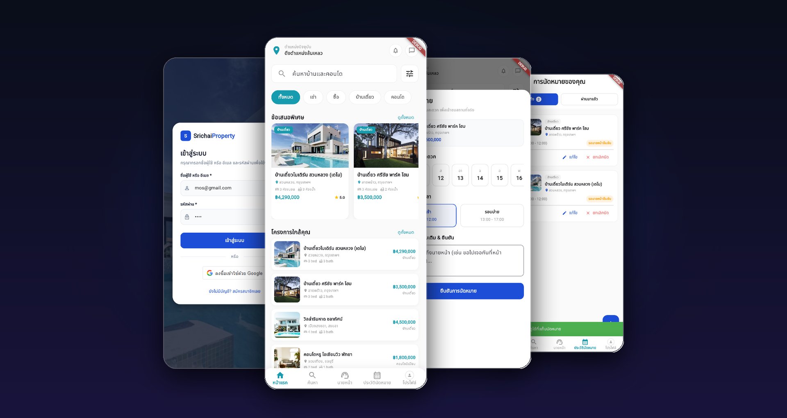

.png)


Sidtisak
Hanthongchai
Sidtisak Hanthongchai (สิทธิศักดิ์ หาญธงไชย)
> Full Stack Developer_
Fourth-year ICT student at Prince of Songkla University. 289 commits across 3 codebases (Web, Web App, Mobile). Specialized in Next.js, React, Node.js, and Flutter with an emphasis on clean architecture and automated testing.
📍 Hat Yai, Songkhla, Thailand
Technologies I Work With
BENTO GRID
> About Me
Fourth-year Information and Communication Technology (ICT) student at Prince of Songkla University, Hat Yai Campus. Experienced in full-lifecycle system design (Context Diagrams, DFD, ER Models, Figma Interactive Prototyping across 5 team projects) to production deployment, owning core subsystems with verified Git commits and automated testing.
across 3 Projects
Playwright Suite
> Services
> Full Stack
Next.js 16, React 19, Node.js, Prisma, PostgreSQL
> Mobile Dev
Flutter, Dart, Express.js, MariaDB, REST API
> SKILLS_STACK
PROJECTS

Srichai Property
85 Commits · 15 PRs · 32 TablesReal estate capstone platform. Designed 32 DB tables & 8 DFD processes. Built API access control, SLA countdown service, Recharts analytics, and rebuilt hasAgentBookingConflict to prevent overlapping client viewings.

GameStore
144 Commits · 81 Tests · 8.4MB → 1.25MBReact storefront with 81 Playwright E2E tests covering every route and auth flow. Rebuilt lost backend as a dependency-free Node.js mock server. Optimized page assets reducing bundle size from 8.4MB to 1.25MB.

Property Viewing App
60/78 Commits · 5 ModelsFlutter mobile booking application. Built end-to-end booking flow across 5 API routes. Guarded 11 endpoints with checkAccessToken middleware, implemented 5 type-safe Model classes with fromJson, and covered with Flutter integration_test.
Work, Education & Volunteering
Data Analyst Intern
16 Apr – 12 Jun 2026Khunying Long Athakravisunthorn Learning Resources Center, PSU
- Cleaned and restructured 5 years (2021–2025) of library statistics for 5 universities in Excel and Power Query, created a 5-page Power BI dashboard for the department head, and produced a comprehensive 21-page handover manual for successors.
- Key management insight: PSU operated 48 IT systems (peer avg <25) on a 6x smaller IT budget, correlating with the group's highest average downtime.
B.Sc. in ICT (Information & Communication Technology)
2023 - Expected 2027Prince of Songkla University, Hat Yai Campus
- Faculty of Science. Relevant Coursework: Data Structures & Algorithms (C), Object-Oriented Programming (Java), Software Engineering, ICT Project I, Database Systems, Systems Analysis & Design, Interaction Design, Software Service & Quality Management, IT Governance.
- Cooperative Education: Course 308-497 (6 Credits, 40 hrs/week, 16 Nov 2026 – 7 Mar 2027).
Training & Community Leadership
2024 – 2026Prince of Songkla University, Hat Yai Campus
- Certified: AI Literacy for Learning and Work (Batch 6) — Education and Learning Innovation Academy (EILA), PSU (Sep 2026).
- Technical Workshops: Git, CI/CD & Container Deployment and AI Vibe Coding intensive training (Aug 2026).
- Mobile App Development with Flutter workshop — Faculty of Science / PSU ICT Club (Aug 2025), later scaled into a production coursework mobile app.
- Flood Relief Assistance Centre volunteer — Student Development and Alumni Relations, Hat Yai Campus (Nov 2025).
- Volunteer Leadership for Sustainable Community Development course — PSU Volunteer Center (Nov 2024, 20 competency hours / 3 credits).
University Leadership & Certified Activities
2023 – 2026Prince of Songkla University, Hat Yai Campus
- 136 Total Activity Hours certified by PSU Student Development Division (81 hrs Competency + 55 hrs General Interest).
- Recreation Team — ICT Student Orientation 2024 (Co-organizer for student activities & engagement, Dec 2024).
- Co-organizer — National Science Week Exhibition 2023 (12 hours, event operations and leadership).
- Co-op Readiness Training — Completed Faculty of Science Cooperative Education modules (Sci Festival 2026: Industry Panel & Student Exchange, Jul 2026).
Interested in working together?
Feel free to email me directly or leave a message in the form below. I will get back to you as soon as possible.